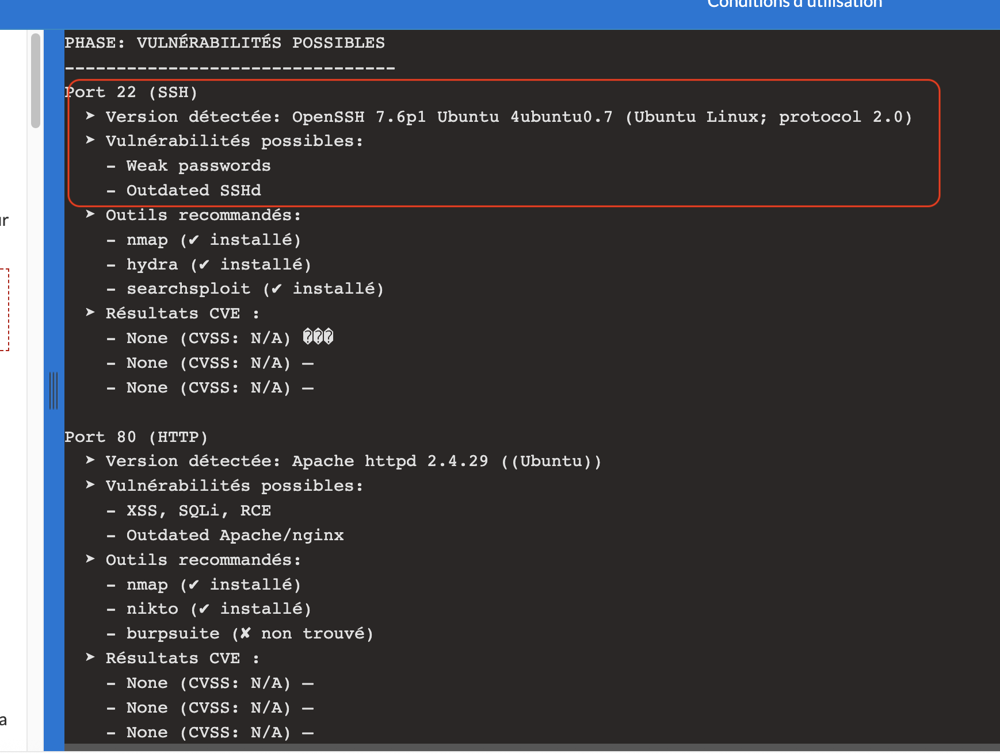
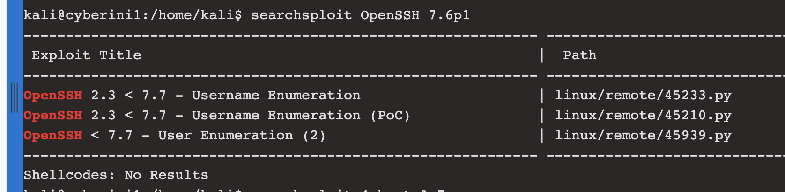
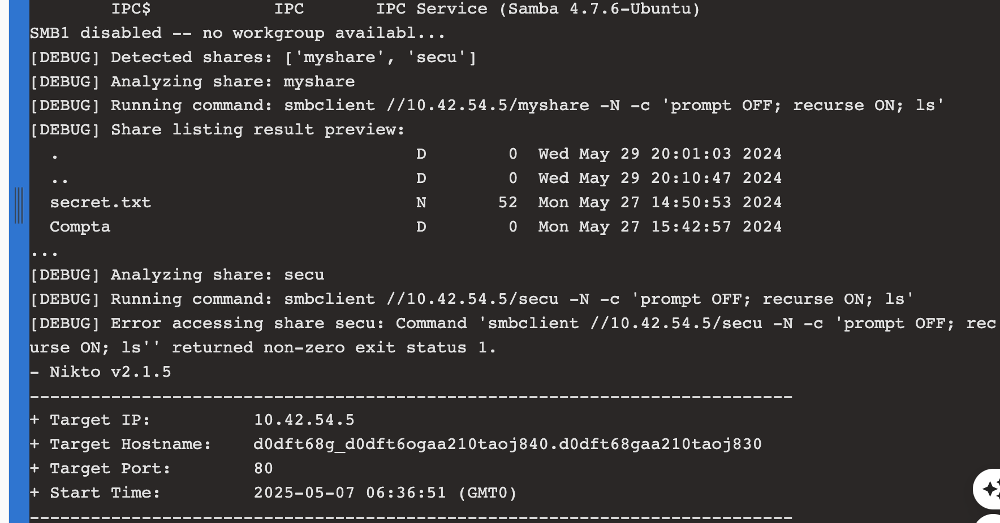

🔎 Parcours d’un pentesteur : entre outils perdus, compatibilité et gain de temps
07 Mars 2025
Comment scanner rapidement avec Python pour trouver des vulnérabilités avec une IP.
Faire du pentest, c’est souvent comme naviguer dans un océan d’outils — certains à scanner, d’autres à exploiter. Mais entre les incompatibilités (Linux, Ubuntu, Windows…), les dépendances manquantes ou encore la complexité de certains outils, il est facile de s’y perdre. C’est exactement ce qui m’est arrivé.
👉 Pour gagner du temps et éviter les reconfigurations permanentes, j’ai développé un petit script Python qui automatise plusieurs étapes clés du pentest, tout en restant flexible et léger.
✅ Ce que fait le script :
- Scan des ports principaux via nmap (même si non installé, le script continue).
- Détection automatique de services (ex : port 445 → smbclient, port 22 → SSH).
- Debug utile : il liste les fichiers suspects comme .txt, .bak, etc., directement depuis les partages réseau.
- Recherche d’exploits connus via searchsploit (et trace les outils manquants sans bloquer le processus).
- Génération d’un fichier report.txt clair, récapitulant vulnérabilités, fichiers suspects et exploits potentiels.
🖼️ Quelques captures d’écran ci-dessous montrent le type de sortie générée, avec par exemple :
- Une version vulnérable de OpenSSH 7.6p1 détectée avec énumération de CVE.


- Un partage SMB contenant des fichiers intéressants comme secret.txt.
📥 Vous pouvez télécharger le script ici :
wget https://raw.githubusercontent.com/tesshsu/pen_tester_tool/refs/heads/main/python_scan/quickpentest.py
Ou consulter l’ensemble du repo :
🔗 https://github.com/tesshsu/pen_tester_tool
🔄 Le pentest n’est jamais linéaire, mais ce genre d’outil peut vous faire gagner un temps précieux.
💬 Si vous avez des suggestions ou d'autres scripts à partager, je suis preneur !
Hashtags :
#CyberSecurity
#Pentest
#PythonTool
#CTF
#Infosec
#Linux
#BugBounty
Partagez cet article :